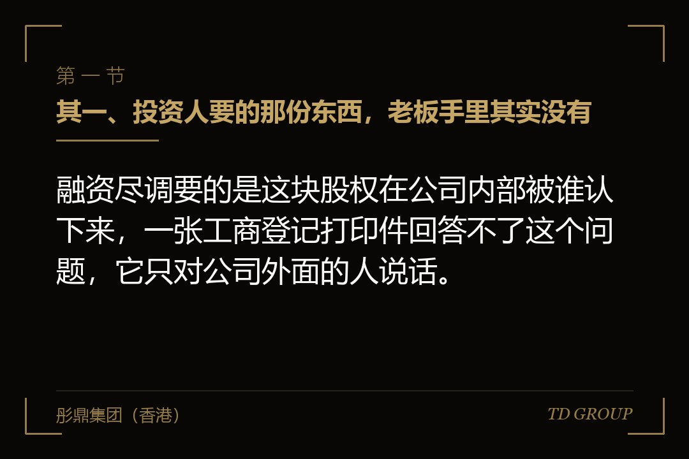
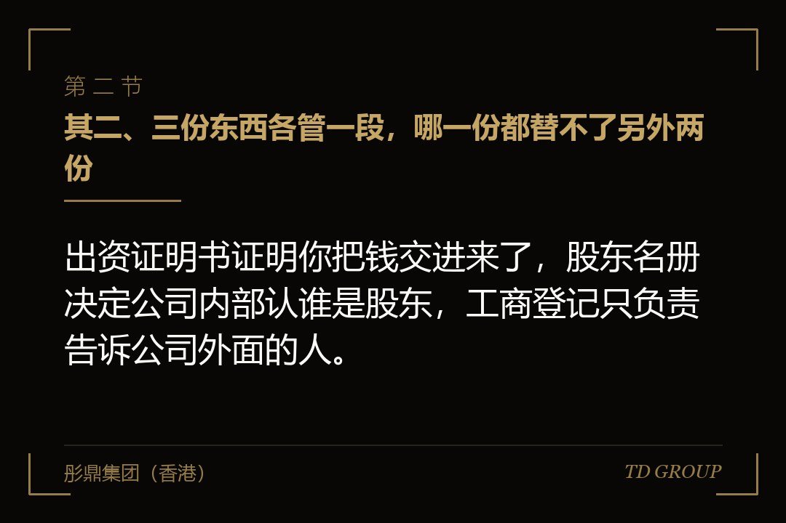
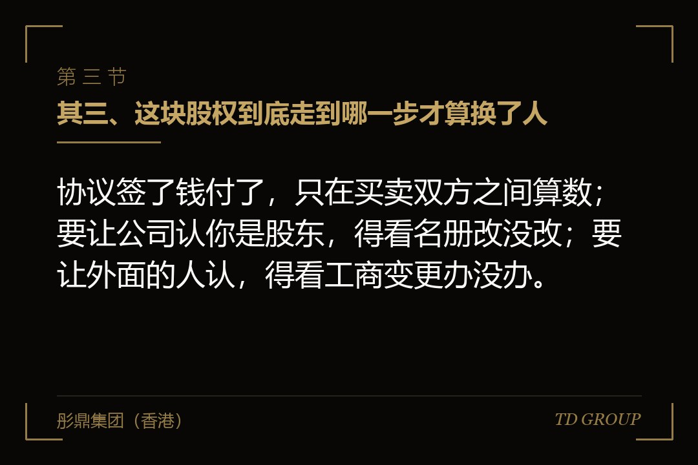

其一、投资人要的那份东西，老板手里其实没有

结论先行：融资尽调要的是这块股权在公司内部被谁认下来，一张工商登记打印件回答不了这个问题，它只对公司外面的人说话。
有家做智能水表的公司，这一轮融资谈到尽调清单那一步，投资人法务要三样东西：现行有效的公司章程、股东名册，以及每位股东的出资证明书扫描件。老板当场让财务去办，财务半小时后递上来一份从政务网站上打印的股东信息页，上面股东姓名、出资额、出资比例一栏不缺。
法务回过来一句话：这不是股东名册。老板的原话是，股东就这几个人，比例也是这个比例，还有什么不一样的。这句话问得不算冤枉——上面那些数字确实都对，对方要的却不是那些数字。
补齐这三样花了三周。名册要新做，做的时候才发现三位股东里有两位的出资时点跟账上的银行回单差了将近一年；出资证明书从来没签发过，要补签，补签就要落日期，落哪一天又要重新讨论一轮。这三周里投资人那边没催，只是把这一项挪进了交割条件。
事后回看，这件事跟公司经营一点关系都没有。客户没丢、订单没减、账上一分钱没变，卡住的是几张纸。而这几张纸在公司成立那年花一个下午就能办完，那时候它不叫问题，叫开公司的常规动作。
其二、三份东西各管一段，哪一份都替不了另外两份

结论先行：出资证明书证明你把钱交进来了，股东名册决定公司内部认谁是股东，工商登记只负责告诉公司外面的人。
出资证明书是公司发给股东的凭证，记的是这位股东认了多少、实际交了多少、什么时候交的。它证明的是钱这件事，也就是股东资格的由来。有限责任公司这一侧对应的是出资证明书，股份有限公司那一侧对应的是股份凭证，形式不同，作用是同一个。
股东名册是公司自己置备的一本册子，记的是股东是谁、持有多少、什么时候取得的。它管的是公司内部认谁——谁有权来开股东会、谁的表决算数、分红打给谁、转让时该由谁签字。一般规则是，记载于股东名册的股东可以依名册向公司主张行使股东权利。
工商登记是把股东信息报到公司登记机关公示出去，管的是对外。它解决的是公司外面的人怎么知道股东是谁：交易对手来核你签字的人有没有权、银行来核实际控制人是谁、法院来核该冻结谁的股权，看的都是它。一般规则是，没有办登记或者变更登记的，不能对抗公司外面的人。
打个比方更容易懂。你在写字楼里租了一层，租金交完拿到的是收据；物业那边有一份本层归谁使用的记录；楼下大堂的指示牌上写着哪一层是哪家公司。收据证明你付过钱，物业的记录决定你刷卡能不能进那一层，指示牌只是让快递找得到你。三样东西各管一段，缺哪一样都会在某个具体时刻卡住。
其三、这块股权到底走到哪一步才算换了人

结论先行：协议签了钱付了，只在买卖双方之间算数；要让公司认你是股东，得看名册改没改；要让外面的人认，得看工商变更办没办。
一块股权换手通常有四个动作。签转让协议，让双方之间有了权利义务；付款，让转让方拿到钱、受让方有了要求交付的依据；变更股东名册记载，让公司内部开始认这位新股东；办工商变更登记，让公司外面的人也认。这四个动作不是同一件事的四种说法，它们的效力是分段生效的。
两种误会各占一半。一种是签了协议就以为股权到手了，剩下的手续慢慢办；另一种是觉得只要工商变更办下来就万事大吉，名册那本册子公司里根本没人管。前一种的风险在于对公司主张不了权利，后一种的风险在于内部记载与对外公示对不上，一被追问就要解释。
有家做特种电缆的公司出过这样的事。一位受让方跟老股东签了协议，全款也付了，公司这边一直没改名册，也没人提。两年里分红三次，没有一次算上他；开股东会没通知过他一回；等他想把这块股权再转出去，接手方要求先把内部记载理清楚，他才发现自己在公司文件上从来没出现过。
这件事的正确顺序不复杂：书面通知公司，请求变更名册记载，然后办工商变更。一般规则是，公司无正当理由拒绝或者在合理期限内不予答复的，转让人和受让人可以依法向法院主张，具体以公司章程约定和当时有效的法律为准。要紧的是别把付款那一刻当成终点。
其四、同一块股权卖了两次，两个买家谁能拿到
结论先行：对内看名册记载和有没有真的当过股东，对外看工商变更办没办下来，这条分界决定两个买家里谁拿到股权、谁只能要钱。
假设有家做香精香料的公司，一位持股三成的股东手头紧，把这块股权卖给了一位同行。协议签了，对方付了七成款，双方约定余款过户时结清，于是名册没改，工商也没办。四个月后这位股东又把同一块股权卖给了另一个人，这次对方全款付清，当月就把名册改了、工商变更也办下来了。
两个买家都有一份真实有效的协议，都付了钱，谁能拿到这块股权。通常的处理是看完成度而不是看先后：后一位既进了名册、也完成了对外公示，公司认他、外面的人也认他；先付钱那一位手里的协议仍然有效，但他能主张的是违约责任和损失赔偿，不是这块股权本身。个案里还要看有没有恶意串通等情形，最终由法院结合证据认定。
多数人的直觉是付钱早的赢，这里恰好反过来。决定归属的不是谁先掏钱，是谁把那两步走完了——因为股权不像一台机器可以搬回家，它的归属只能靠记载来体现，所以谁完成了记载，谁就在这场争夺里占住了位置。
这也顺便解释了投资人的尽调清单为什么名册和登记要一起要，还要跟历次转让协议逐份对。少看任何一份都看不出这种情况：只看工商登记，看不到有人手里还攥着一份没执行完的协议；只看协议，看不出哪一份真的落到了记载上。
其五、名册压根没建过的公司，比例比多数人以为的高
结论先行：大量公司从成立到今天没有一本股东名册，平时不影响经营，一碰上融资、转让、继承这三件事会同时卡住。
有家做消防器材的公司成立十一年，做到几个亿的收入，中介进场问名册在哪，财务把工商档案的复印件递过来。这不是财务不专业——公司这十一年里没有任何一个时刻需要用到它，客户不看、银行不看、税务不看，所以它就一直不存在。
补的时候翻出来的东西才是真正要处理的。早年那笔现金出资没有银行流水，只有一张收据；一次增资只有股东会决议，实际到账的凭证找不到了；还有一小块是当年口头转让的，两位当事人还在，但没有任何书面文件。名册本身十分钟就能做出来，这些缺口不行。
所以补名册不是打一张表出来签个字。它要跟三样东西对得上：公司章程和历次股东会决议、每一笔出资的银行凭证、历次转让的协议与完税凭证。对得上的照着记，对不上的不要抹平——把差异写清楚、把原因和补正过程留痕，比做出一本干净好看却经不起追问的册子稳妥得多。
真正决定成本的是时点。没人问的时候补，它是一次内部整理，当事人都在、凭证还能从银行调出来、口头的事补一份书面确认就行；有人在看的时候补，同一件事变成一项交割条件，有截止日、有对手方，也就有了筹码。
其六、继承、婚内分割、法院执行进来的股权，怎么跟名册和登记对上
结论先行：这三种股权不是买来的，它们进公司走的不是转让那条路，但名册记载和工商变更这两步一样都少不了。
继承这一侧。一般规则是，自然人股东去世后，其合法继承人可以依法继承股东资格，公司章程另有规定的除外。公司要办的仍然是变更名册记载与办工商变更，只是依据换了——不是转让协议，而是继承相关的法律文件。这里最容易出的问题是拖：家里的事没理清，公司这边就一直空着，而这段时间公司做的每一份需要全体股东签字的文件都悬在那里。
婚内分割这一侧。依据是双方的书面分割安排或者生效判决，但对内那一步照样要走。常见的卡点是拿着一份文书去公司要求改名册，而公司这边不知道该由谁来签、按什么口径记，于是搁下来。搁下来的后果不是维持原状，是内部记载与真实权属分了岔。
法院强制执行这一侧最容易被公司忽略。这类股权变动的依据是法院的裁定和协助执行文书，公司不是这场纠纷的当事人，但配合办理是要照办的。实际发生过的情形是，公司事后才知道自己的股东换了人——而更换那一刻起，这位新股东就在名册和登记上有了位置。
这三种进来的股权在尽调里被追问得最细，原因很简单：它们的取得依据不在公司手里。买来的股权公司至少能翻出一份协议，这三种要去调外部文件，调不到就只能靠当事人说，而当事人说的话在申报材料里撑不住。
其七、尽调那几格具体在核什么
结论先行：尽调核的不是名册上有没有这个人，是名册、出资凭证、登记信息、公司章程和历次决议这五样能不能互相印证。
交叉核的路径大致是这样：拿名册上每一位的持股与取得时点，去对历次股东会决议和章程修订；拿每一笔出资额，去对银行进账凭证与实收资本的账务处理；拿名册的现状，去对工商登记的公示信息；再拿历次转让协议，去对名册上那几次变动和完税凭证。五样对上，这一格就过；对不上，追问从对不上的那一处开始。
有家做电梯部件的公司，五样里四样都齐得漂亮，只有一次增资的银行凭证找不到——那家银行的支行早年撤并了。最后是靠调取历史对账单和当年的记账凭证把这笔钱走过的路还原出来，另外补了一份股东确认，前后花了将近两个月。事情本身没有争议，费的全是时间。
投资人为什么非要看名册，说到底是因为他要买的是一个能主张权利的位置。名册记载是他将来向公司主张分红、表决、查账的依据；工商登记是他在公司外面站得住的依据。这两样对他来说不是二选一，是都要，而且要跟出资凭证串得上。华尔街彤鼎俱乐部的一次交流里，有位投资人把这一格叫做体检报告的血常规——不是最复杂的项目，但它不正常，后面的项目都要重看。
反过来讲，这一格也是最容易变成加分项的一格。一家公司能在一小时之内把每一块股权的来路、时点、凭证和对应文件摆出来，传递出去的信息不只是股权清晰，还包括这家公司是被管理过的，而这句话在整轮谈判里都在起作用。
其八、申报前的确权怎么补，以及今天下午就能拉的一张清单
结论先行：确权要做的是把每一块股权的来路、取得时点和凭证摆成一条能走通的链，链断掉的地方补文件，补不了的把原因写清楚。
有家做无纺布的公司提前十四个月开始理这件事。头一个月只做一件事：把公司成立到现在的每一次股权变动列成一条时间线，每一次标注依据是什么、凭证在哪。列完发现二十来年里有三处断点，接下来的时间就是逐个补，等中介进场时这条线已经是连着的。
自己拉清单不需要外人，一个下午就够。公司有没有一本在用的股东名册；名册上每一位的出资时点和金额，跟银行凭证对不对得上；每一位有没有拿到过出资证明书；历次转让有没有协议、有没有完税凭证；名册和工商登记的信息是不是一致；有没有继承、分割或者法院执行进来的股权；有没有代持或者由亲属代为登记的情况。哪一项答不上来，那一项就是要补的。
这张清单的价值不在于填满它，在于它让人当场知道自己缺什么。答得上来的公司下一轮尽调会轻松很多；答不上来的公司也不吃亏，因为现在知道总比在交割条件里知道便宜——同一件事在没人看的时候是内部整理，在有人看的时候是谈判。华尔街彤鼎俱乐部的一次私董会上，有位企业主把这句话说得更直白。
所以回到开头那个场景。投资人要股东名册，老板递过来一张工商登记打印件，这不是老板不专业，是这两样东西在他这些年的经营里从来没有分开过。本质上，确权这件事不难，它只是很少有人在没被问到的时候去做——而关键在于，它的成本不取决于会不会被问，只取决于被问的那一刻手里有没有。